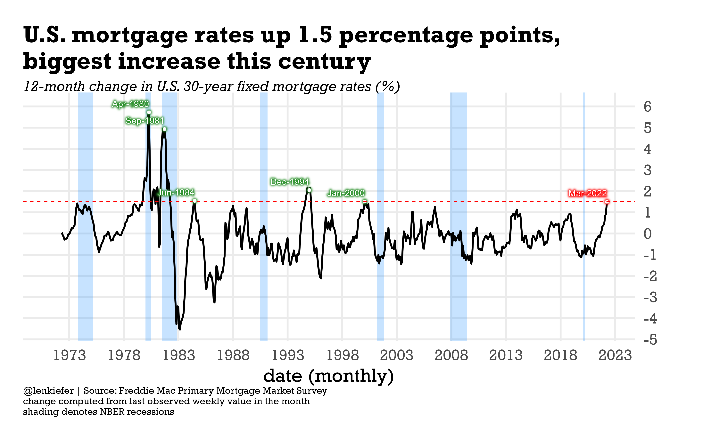
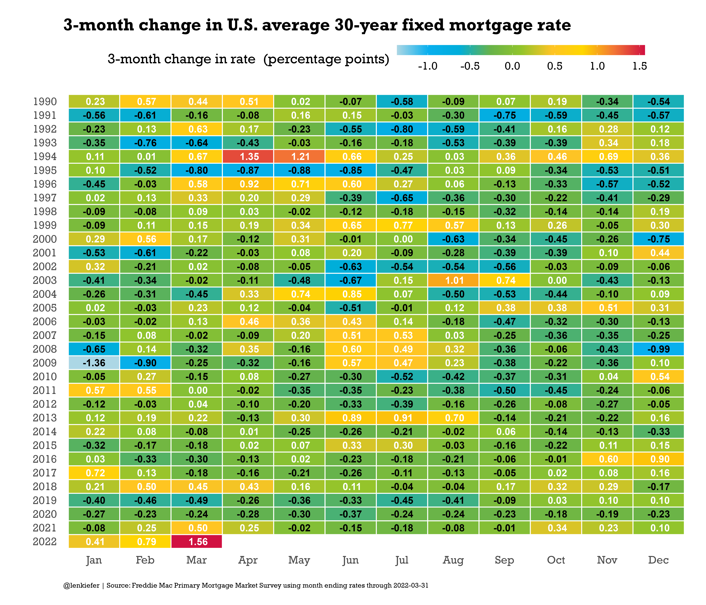

Mortgage rates have been increasing. If you measure rates with the last observed value in the month, then March 2022 had the largest 12-month increase of the U.S. average 30-year fixed mortgage rate in the 21st century of 1.5 percentage points. If you go back to the prior century there were five periods where rates increased by at least 1.5 percentage points on a 12-month basis.
Of those periods, two were during a recession, while for the other three, the economy avoided a recession for at least the next 12 months. For a related chart, see Calculated Risk, which charts the percent change in mortgage rates. Coming off a very low base, the recent increases are the near largest recorded.
mortgage rates are up 1.5 percentage points from a year ago, the biggest 1-year increase this century
— 📈 Len Kiefer 📊 (@lenkiefer) April 1, 2022
last century we had 5 episodes where rates increased that fast
2 were concurrent with recessions, but after other 3 economy was not in recession within next year pic.twitter.com/YkHxbNZe4j
Let’s make a couple charts with R
First we’ll make this chart, same as the tweet.

Then we’ll make another one focusing on 3-month changes.

Code for line chart
The first chart uses just a touch of ggfx to highlight some of the points.
################################
# load libraries----
################################
library(ggfx)
library(tidyverse)
library(data.table)
library(extrafont)
################################
# create chart theme----
################################
theme_len <- function(font="Arial", bs=24,...){
theme_minimal(base_size=bs,base_family=font,...) %+replace%
theme(plot.caption=element_text(hjust=0,size=rel(0.5)),
plot.title=element_text(size=rel(1.25),face="bold",hjust=0,
margin=margin(0,0,10,0)),
plot.subtitle=element_text(face="italic",hjust=0,margin=margin(0,0,10,0)
,size=rel(0.75)
),
plot.background=element_rect(fill="white",color=NA),
panel.background=element_rect(fill="white",color=NA),
plot.margin=margin(1,1,1,1,"cm")
)
}
################################
# load data----
################################
# nber recessions data frame just since 1973
recessions.df = read.table(textConnection(
"Peak, Trough
1973-11-01, 1975-03-01
1980-01-01, 1980-07-01
1981-07-01, 1982-11-01
1990-07-01, 1991-03-01
2001-03-01, 2001-11-01
2007-12-01, 2009-06-01
2020-02-02, 2020-04-01"), sep=',',
colClasses=c('Date', 'Date'), header=TRUE)
# mortgage data
df <- fread("http://www.freddiemac.com/pmms/docs/PMMS_history.csv")
df$date <- as.Date(df$date,format="%m/%d/%Y")
dd <- last(df$date)
dfm3 <-
df %>% group_by(year=year(date),
month=month(date),
monthf=fct_reorder(format(date,"%b"),month(date)),
month=as.factor(month(date))) %>%
summarize(rate=last(pmms30,na.rm=TRUE),
date= last(date,na.rm=TRUE),
rate15=mean(pmms15,na.rm=TRUE)) %>%
ungroup()%>%
mutate(dr=rate-lag(rate,3),
dr12=rate-lag(rate,12))
# create indicators for peaks
dfm3d <- filter(dfm3,date %in% as.Date(c("2022-03-31",
"2000-01-28",
"1994-12-30",
"1984-06-29",
"1981-09-25",
"1980-04-25")))
# create plot
ggplot(data=dfm3, aes(x=date,y=dr12, label=format(date,"%b-%Y")))+
geom_rect(data=filter(recessions.df,Peak>="1970-01-01"),
inherit.aes=FALSE,aes(xmin=Peak,xmax=Trough,ymin=-Inf,ymax=Inf),
fill="dodgerblue",alpha=0.25)+
geom_line(size=1.1)+
theme_len(font="Rockwell")+
scale_x_date(date_breaks="5 years",date_labels="%Y")+
with_outer_glow(geom_point(data=.%>% filter(date==max(date)), color="white"),colour="red",sigma=5,expand=5)+
with_outer_glow(geom_point(data= head(dfm3d,-1), color="white"),colour="forestgreen",sigma=5,expand=5)+
with_outer_glow(geom_text(data= head(dfm3d,-1), color="white",nudge_y=0.4,hjust=1),colour="forestgreen",sigma=5,expand=5)+
with_outer_glow(geom_text(data= tail(dfm3d,1), color="white",nudge_y=0.4,hjust=1),colour="red",sigma=5,expand=5)+
geom_hline(data=.%>% filter(date==max(date)), aes(yintercept=dr12),linetype=2,color="red")+
theme(panel.grid.minor=element_blank())+
scale_y_continuous(position="right",breaks=seq(-5,6,1))+
labs(x="date (monthly)",
y="",
title="U.S. mortgage rates up 1.5 percentage points,\nbiggest increase this century",
subtitle="12-month change in U.S. 30-year fixed mortgage rates (%)",
caption="@lenkiefer | Source: Freddie Mac Primary Mortgage Market Survey\nchange computed from last observed weekly value in the month\nshading denotes NBER recessions")Code for tile plot
And here’s the code for the tile plot. The code to construct the color scheme is described in this post Housing usually heats up in summer.
# Function for colors ----
# adapted from https://drsimonj.svbtle.com/creating-corporate-colour-palettes-for-ggplot2
#####################################################################################
## Make Color Scale ---- ##
#####################################################################################
my_colors <- c(
"green" = rgb(103,180,75, maxColorValue = 256),
"green2" = rgb(147,198,44, maxColorValue = 256),
"lightblue" = rgb(9, 177,240, maxColorValue = 256),
"lightblue2" = rgb(173,216,230, maxColorValue = 256),
'blue' = "#00aedb",
'red' = "#d11141",
'orange' = "#f37735",
'yellow' = "#ffc425",
'gold' = "#FFD700",
'light grey' = "#cccccc",
'purple' = "#551A8B",
'dark grey' = "#8c8c8c")
my_cols <- function(...) {
cols <- c(...)
if (is.null(cols))
return (my_colors)
my_colors[cols]
}
my_palettes <- list(
`main` = my_cols("blue", "green", "yellow"),
`cool` = my_cols("blue", "green"),
`cool2hot` = my_cols("lightblue2","lightblue", "blue","green", "green2","yellow","gold", "orange", "red"),
`hot` = my_cols("yellow", "orange", "red"),
`mixed` = my_cols("lightblue", "green", "yellow", "orange", "red"),
`mixed2` = my_cols("lightblue2","lightblue", "green", "green2","yellow","gold", "orange", "red"),
`mixed3` = my_cols("lightblue2","lightblue", "green", "yellow","gold", "orange", "red"),
`mixed4` = my_cols("lightblue2","lightblue", "green", "green2","yellow","gold", "orange", "red","purple"),
`mixed5` = my_cols("lightblue","green", "green2","yellow","gold", "orange", "red","purple","blue"),
`mixed6` = my_cols("green", "gold", "orange", "red","purple","blue"),
`grey` = my_cols("light grey", "dark grey")
)
my_pal <- function(palette = "main", reverse = FALSE, ...) {
pal <- my_palettes[[palette]]
if (reverse) pal <- rev(pal)
colorRampPalette(pal, ...)
}
scale_color_mycol <- function(palette = "main", discrete = TRUE, reverse = FALSE, ...) {
pal <- my_pal(palette = palette, reverse = reverse)
if (discrete) {
discrete_scale("colour", paste0("my_", palette), palette = pal, ...)
} else {
scale_color_gradientn(colours = pal(256), ...)
}
}
scale_fill_mycol <- function(palette = "main", discrete = TRUE, reverse = FALSE, ...) {
pal <- my_pal(palette = palette, reverse = reverse)
if (discrete) {
discrete_scale("fill", paste0("my_", palette), palette = pal, ...)
} else {
scale_fill_gradientn(colours = pal(256), ...)
}
}
# Make chart ----
df %>% group_by(year=year(date),
month=month(date),
monthf=fct_reorder(format(date,"%b"),month(date)),
month=as.factor(month(date))) %>%
summarize(rate=last(pmms30,na.rm=TRUE),
rate15=mean(pmms15,na.rm=TRUE)) %>%
ungroup()%>%
mutate(dr=rate-lag(rate,3)) %>%
filter(year>1989) %>%
ggplot(aes(x=monthf,y=fct_reorder(factor(year),-year),
fill=dr,
label=format(round(dr,2)),small=2))+
geom_tile()+
geom_tile(fill=NA,color="white",size=0.75)+
geom_text(aes(color=ifelse(dr<0,"black","white")),
size=6,fontface="bold",font="Rockwell",show.legend="false")+
scale_color_manual(values=c("black","white"))+
theme_len(font="Rockwell")+
theme(plot.caption=element_text(hjust=0),
panel.grid=element_blank(),
legend.key.width=unit(3,"cm"),
legend.position="top")+
scale_fill_mycol(palette="cool2hot",name="3-month change in rate (percentage points)",discrete=FALSE)+
labs(x="",y="",
title="3-month change in U.S. average 30-year fixed mortgage rate",
caption=paste0("@lenkiefer | Source: Freddie Mac Primary Mortgage Market Survey using month ending rates through ",
dd))